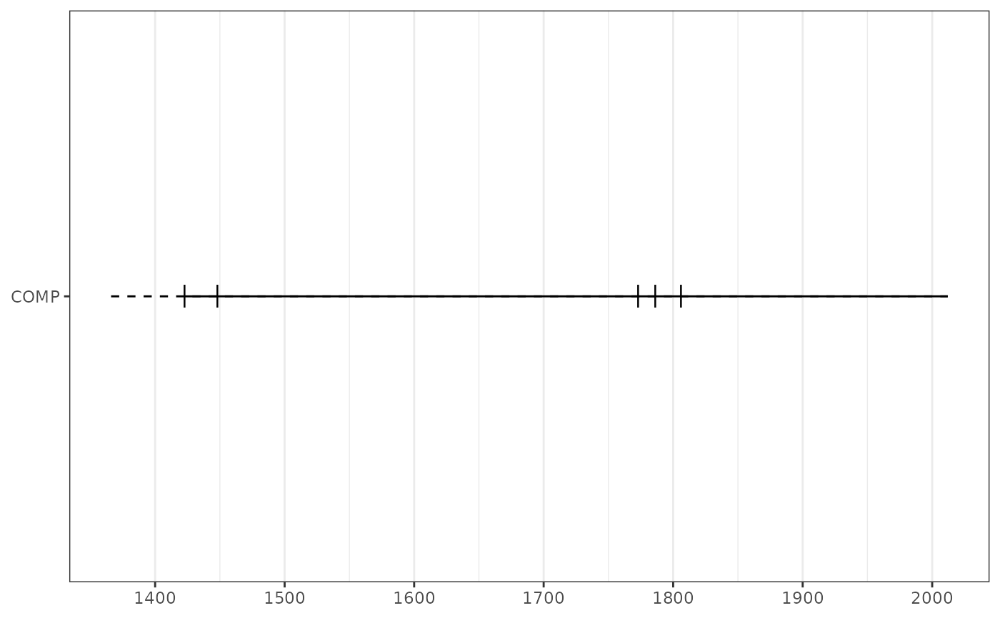

Composite fire events in fhx object
composite(
x,
filter_prop = 0.25,
filter_min_rec = 2,
filter_min_events = 1,
injury_event = FALSE,
comp_name = "COMP"
)An fhx object.
The minimum proportion of fire events in recording series needed for fire event to be considered for composite. Default is 0.25.
The minimum number of recording series needed for a fire event to be considered for the composite. Default is 2 recording series.
The minimum number of fire scars needed for a fire
event to be considered for the composite. Default is 1. Fire injuries are
included in this count if injury_event is TRUE.
Boolean indicating whether injuries should be considered
events. Default is FALSE.
Character vector of the series name for the returned fhx
object composite series. Default is 'COMP'.
An fhx object representing the composited series. The object will
be empty if there are nocomposite-worthy events.
intervals() fire interval analysis from an fhx composite.
sea() superposed epoch analysis.
series_stats() basic summary stats for an fhx object.
get_event_years() gets years for various events in an fhx object.
count_event_position() count the number of different events in an fhx
object.
yearly_recording() count the number of "recording" events in each year
of an fhx object.
fhx() constructs an fhx object.
as_fhx() casts data frame-like object into an fhx object.
data(lgr2)
plot(composite(lgr2))

# Use with composite to get composite years:
comp <- composite(pgm, comp_name = "pgm")
event_yrs <- get_event_years(comp)[["pgm"]]
print(event_yrs)
#> [1] 1636 1648 1664 1674 1685 1714 1724 1737 1746 1748 1752 1782 1789 1795 1798
#> [16] 1806 1818 1824 1842 1863 1871